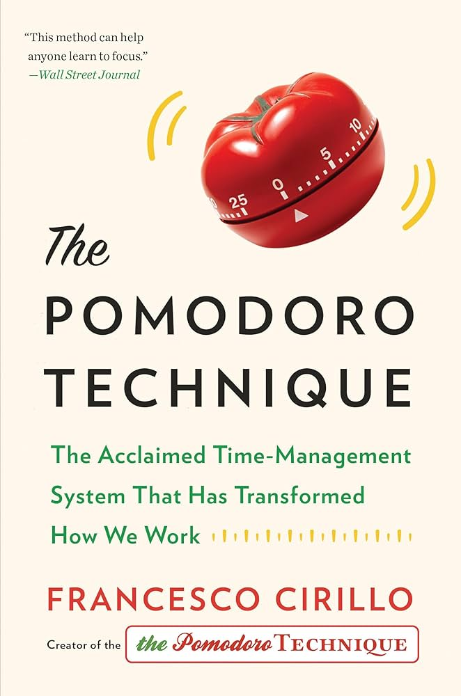
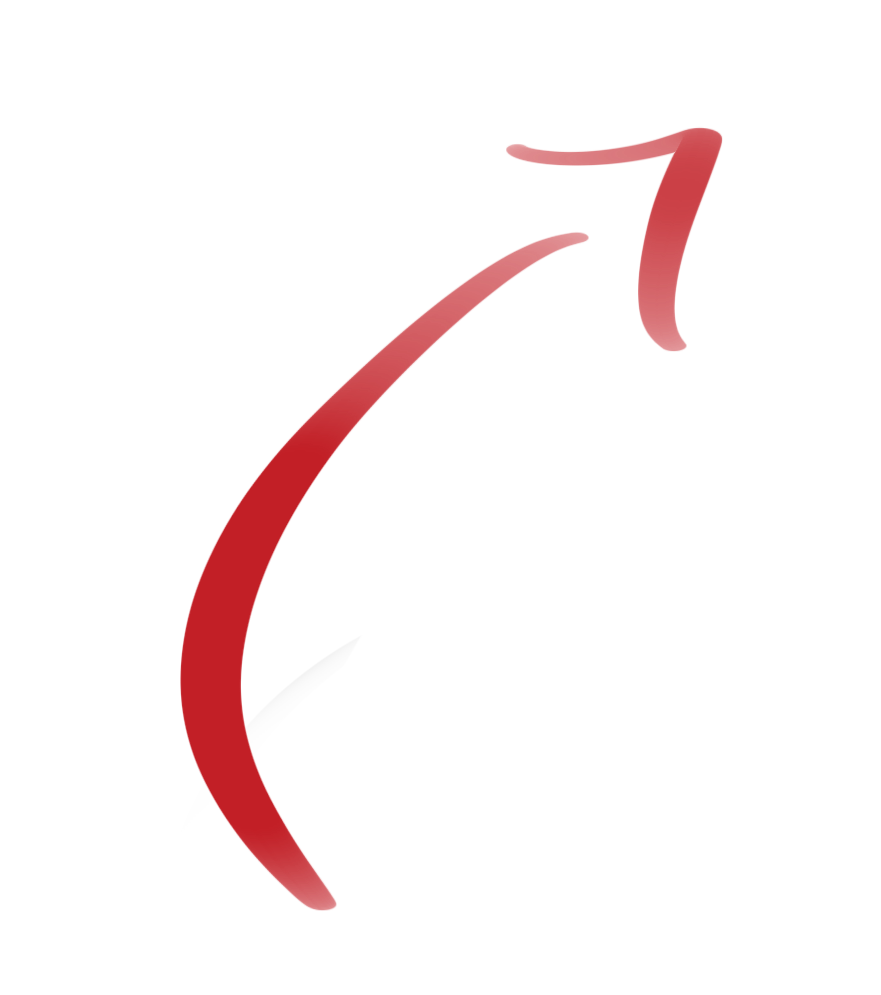

The Pomodoro method was developed in the late 1980s by university student Francesco Cirillo. He was struggling to complete his studying and assignments and decided to break down his work into smaller chunks. Thus, the pomodoro method was born. This method is completely customizable!


Check out this book if you're interested!
25:00